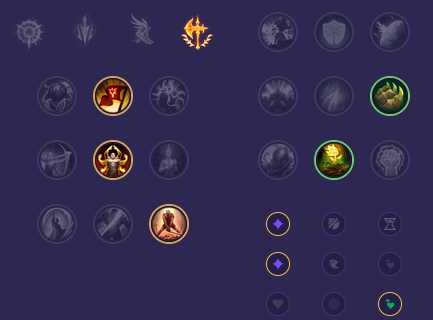

Starter: Tarcza Dorana Mikstura Zdrowia Core Bulid: Włócznia Shojin Pancerniaki Woltaniczny Cyklomiecz Full Bulid: Uraza Seryldy Gruboskórność Steraka Taniec Śmierci

Słaby przeciwko: - Malphite - Irelia - Singed - Illaoi - Heimerdinger - Zaahen Dobry przeciwko: - Dr. Mundo - Nasus - Darius - Mordekaiser - Teemo - Sett